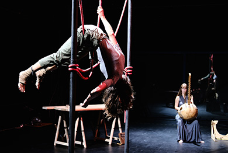

Alodeyá

Companía de circo, danza y mísica Alodeyá.
Enlace a la página
Serendipia cuenta con un ingeniero en informática que puede programar distintas páginas web a medida del cliente. Desde páginas creadas desde HTML y CSS de cero a páginas creadas con diferentes gestores de contenido como Wordpress. La programación de páginas web está abierta a cualquier ámbito, dependiendo del proyecto. Sin embargo, el valor añadido que aporta Serendipia frente a otros desarrolladores en el campo de las artes escénicas, es su conocimiento del sector y las necesidades e idiosincrasia de este tipo de páginas para los artistas.
Copyright © Serendipia Producciones. All Rights Reserved.